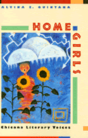

<body bgcolor="#FFFFFF" text="#000000" link="#0000FF" vlink="#CC0000" alink="#CC0000"><center><hr width="350" size="1" align="center" noshade>An in-depth examination of contemporary Chicana writers<hr width="350" size="1" align="center" noshade><p><a href="https://cdcshoppingcart.uchicago.edu/Cart/ChicagoBook.aspx?ISBN=9781566393720&&PRESS=temple" target="_top">Buy this book!</a> | <a href="https://cdcshoppingcart.uchicago.edu/Cart/Cart.aspx?PRESS=temple" target="_top">View Cart</a> | <a href="https://cdcshoppingcart.uchicago.edu/Cart/Cart.aspx?PRESS=temple" target="_top">Check Out</a></p><p></p></center><!--none//--><h1>Home Girls</h1>
<H2>Chicana Literary Voices</H2>
<h3>Alvina E. Quintana</h3>
<P>cloth 1-56639-372-8 $77.50, Jan 96, <FONT COLOR=#990033>Out of Stock Unavailable</FONT>
<br>paper 1-56639-373-6 $30.95, Jan 96, <FONT COLOR=#990033>Available</FONT>
<br>Electronic Book 1-43990-363-8 $30.95 <FONT COLOR=#990033>Out of Stock Unavailable</FONT>
<BR> 176 pp
5.5x8.25
</P><BLOCKQUOTE><I>"</I>Home Girls<I> makes an original, bold, and significant contribution to feminist studies, Chicana/o studies, and literature. Quintana accomplishes what few critics in Chicana/o studies have done: she applies different interpretive paradigms to her reading of Chicana texts, blending ethnography with literary criticism, ideological analysis with semiotics. Her reading of literary texts is rich in texture and detail."</I>
<br>&#151<b>Rosa Linda Fregoso</b>, author of <I>Bronze Screen: Chicana and Chicano Film Culture</I><I></I></BLOCKQUOTE>
<p>Chicana writers in the United States write to inspire social change, to challenge a patriarchal and homophobic culture, to redefine traditional gender roles, to influence the future. Alvina E. Quintana examines how Chicana writers engage literary convention through fiction, poetry, drama, and autobiography as a means of addressing these motives.
<p>Her analysis of the writings of Gloria Anzaldua, Ana Castillo, Denise Chavez, Sandra Cisneros, and Cherrie Moraga addresses a multitude of issues: the social and political forces that influenced the Chicana aesthetic; Chicana efforts to open a dialogue about the limitation of both Anglo-American feminism and Chicano nationalism; experimentations with content and form; the relationship between imaginative writing and self-reflexive ethnography; and performance, domesticity, and sexuality.
<p>Employing anthropological, feminist, historical, and literary sources, Quintana explores the continuity found among Chicanas writing across varied genres&#151a drive to write themselves into being.
<BR>&nbsp;<h2>Reviews</h2>
<p><i>"Quintana... argues for the recognition of a Chicana experience and poetics distinct from those of mainstream feminists and from the androcentric Chicano literary movement. Working from a cultural studies orientation, Quintana's position reflects a neo-Marxist understanding of materiality as the basis of analysis."</i>
<br>&#151<b><i><a href="http://www.findarticles.com/p/articles/mi_qa3709/is_199804/ai_n8805247" target="new">College Literature</a></i></b>
<BR>&nbsp;<h2>Contents</h2><P>
<p>Acknowledgments
<br>Introduction: <I>Testimonio</I> as Biotheory
<br>1. Politics, Representation, and Emergence of Chicana Aesthetics
<br>2. Classical Rifts: The Fugue and Chicana Poetics
<br>3. <I>The House on Mango Street</I>: An Appropriation of Word, Space, and Sign
<br>4. Shades of the Indigenous Ethnographer: Ana Castillo's <I>Mixquiahuala Letters</I>
<br>5. Orality, Tradition, and Culture: Denise Chavez's <I>Novena Narrativas</I> and <I>The Last of the Menu Girls</I>
<br>6. New Visions: Culture, Sexuality, and Autobiography
<br>Notes
<br>Index
</P><BR>&nbsp;<H2>About the Author(s)</H2>
<P><b>Alvina E. Quintana</b> is Associate Professor of English at the University of Delaware.</P>
<BR><H2>Subject Categories</H2>
<p><A HREF="/tempress/american.html" TARGET="_top">American Studies</a>
<BR><A HREF="/tempress/latino.html" TARGET="_top">Latino/a Studies</a>
<BR><A HREF="/tempress/literature.html" TARGET="_top">Literature and Drama</a>
</p>
<p align="center"><a href="https://cdcshoppingcart.uchicago.edu/Cart/ChicagoBook.aspx?ISBN=9781566393720&&PRESS=temple" target="_top">Buy this book!</a> | <a href="https://cdcshoppingcart.uchicago.edu/Cart/Cart.aspx?PRESS=temple" target="_top">View Cart</a> | <a href="https://cdcshoppingcart.uchicago.edu/Cart/Cart.aspx?PRESS=temple" target="_top">Check Out</a></p><p><font face="Arial" size="1"><a href="copyright.html" onMouseOver="window.status='Web Copyright Policy';return true;" onMouseOut="window.status=''" title="Web Copyright Policy">&copy;</a> 2015 <a href="http://www.temple.edu" target="new" onMouseOver="window.status='Link to Temple University home page';return true;" onMouseOut="window.status=''" title="Link to Temple University home page">Temple University</a>. All Rights Reserved. http://www.temple.edu/tempress/titles/995_reg.html</font></p>